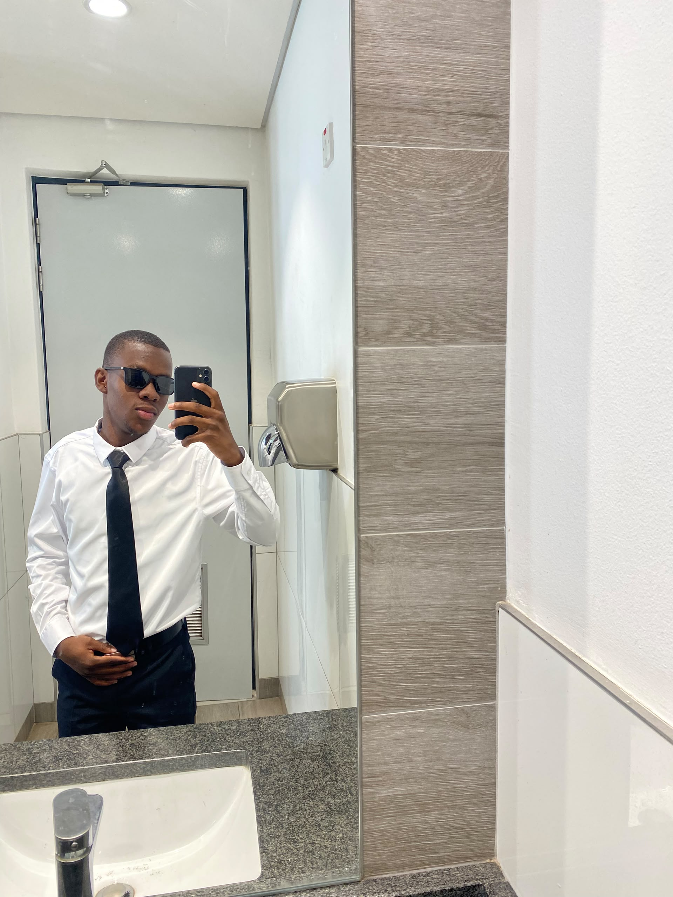

Beyond the
numbers.
A closer look at the person behind the academic journey, the interests that shape him and the ambitions that continue to guide his development.

MEMPHIS GOUTA OLETILE / 2026An individual driven by curiosity and growth.
My name is Memphis Gouta Oletile, and I am currently pursuing an undergraduate degree in Business Intelligence and Data Analytics at Botswana Accountancy College.
I have a particular interest in big data analytics and the possibilities that emerge when information is collected, examined and transformed into meaningful knowledge. I am interested in understanding how technology and analytical thinking can contribute to solving real-world problems.
I consider adaptability and self-discipline important qualities in my personal and academic development. I believe that continuous learning, consistency and the willingness to embrace new challenges are essential to becoming competent in an evolving technological environment.
Building a foundation in data.
Bachelor of Science in Business Intelligence and Data Analytics
Botswana Accountancy College
UNDERGRADUATE STUDENT · 2026Where the journey began.
Lotsane Senior Secondary School
Completed secondary school studies at Lotsane Senior Secondary School.
Botswana Accountancy College
Currently pursuing a degree in Business Intelligence and Data Analytics, developing an academic foundation in data and technology.
Life outside the classroom.
Basketball
Basketball is one of my interests outside academics. It provides an opportunity to remain active, challenge myself and engage in an environment where focus, discipline and teamwork are important.
Growth requires the willingness to remain teachable.
I approach my development with the understanding that knowledge is never static. Every new experience presents an opportunity to improve, reconsider existing perspectives and acquire skills that contribute to future goals.